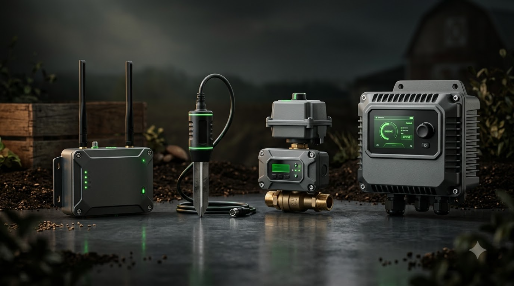
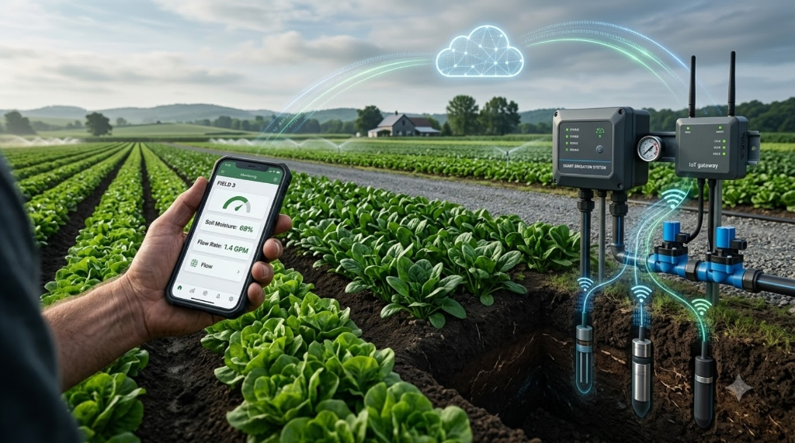

Language / भाषा
01
04
A closed-loop autonomous system engineered to eliminate guesswork, prevent equipment failure, and deliver precision moisture exactly when crops demand it.
Field topography, crop zoning, existing starter integration and piping layout configured.
iSense multi-point soil probes monitor moisture, tension, and root-zone water depth in real time.
iNet IoT Gateway transmits telemetry up to 3km via LoRa to secure 4G cloud infrastructure.
iPump activates 3-phase pump while iValve switches up to 10 latching solenoid drip zones autonomously.
iRoot Mobile App delivers live pump controls, runtime records, weather alerts, and crop telemetry.
Up to 40% water conservation, zero motor burnouts, optimized crop yields, and sustainable farming.
Precision-engineered IoT hardware and intuitive mobile intelligence designed to withstand extreme agricultural environments and automate every phase of irrigation.

Remotely monitor and automate irrigation with iRoot. Control pumps, valves, and sensors while gaining real-time farm insights for smarter decisions, greater efficiency, and lasting success.
Monitor pumps, valves, and sensors from anywhere in the world.
Create automated irrigation schedules with ease and precision timing.
Access live rainfall, temperature, humidity, and wind updates.
View live agricultural market prices and crop pricing trends.
Manage crop information, planting stages, and field acreage.
Track runtime history, water throughput, and equipment performance.
Share farm access securely with staff using QR-based permissions.
Manage multiple farms and dispersed land parcels from a single account.

iPump is a smart pump controller designed for automated irrigation, delivering reliable control, complete motor protection, and real-time power monitoring. Empower your farm with smarter pump management.
Remotely start and stop irrigation pumps using mobile applications or scheduled programs.
Automatically restores pump operation safely after power recovery from grid cuts.
Continuously monitors all three supply phases (R, Y, B) in real time.
Protects the motor from overcurrent, overloading, and abnormal operating conditions.
Configurable bypass mode for maintenance and special field operating conditions.
Track irrigation water usage and runtime logs remotely through iRoot application.
Compatible with a wide range of existing motor starters (DOL, Star-Delta, Electronic).
Operate the pump physically using ON, OFF, and ACK buttons on the enclosure.
iValve enables smarter irrigation for greater farming success with remote control, real-time monitoring, and reliable connectivity. Control up to 10 latching solenoid valves from a single unit with solar autonomy.
Control up to 10 Latching solenoid valves from one single controller.
Monitor and control irrigation valves through the cloud from anywhere.
Instant notifications for line faults, pressure drops, and operational events.
IP65 weather-resistant enclosure engineered for harsh agricultural environments.
Integrated solar charging with rechargeable battery for 24x7 continuous operation.
Automate zone-by-zone irrigation with flexible, crop-calibrated scheduling.
Click any solenoid zone below to toggle water delivery line. Digital meter registers pulses in real time:
iSense is a smart soil moisture sensor for precision irrigation, enabling smarter decisions and greater farming success with accurate multi-depth calibration and instant threshold alerts.
Supports up to four independent soil moisture sensors across varied soil horizons.
"How much water your farm has, you can see here" — continuous volumetric telemetry.
Configure custom dry and wet reference values tailored to sandy, loam, or black cotton soil.
Receive automatic push and SMS notifications when moisture crosses critical thresholds.
Integrated solar charging with rechargeable battery for zero battery swaps in field.
Dust-and-water-resistant enclosure built to withstand direct tractor passes and rain.
iNet keeps your farm connected with secure, dependable IoT communication between field devices and the cloud. With reliable 4G connectivity and real-time control, it helps ensure uninterrupted operations in every season.
Supports up to 3km of long-range LoRa wireless communication across expansive crop fields.
Dedicated SIM slot for secure 4G connectivity. Connects LoRa devices to the cloud seamlessly.
12V solar panel with rechargeable battery for 24x7 autonomous outdoor operation.
Dust-and-water-resistant enclosure for reliable operation in extreme outdoor agricultural conditions.
Integrated GPS for real-time time synchronization and gateway geographic location tracking.
Monitor all connected devices from the cloud and get remote support for rapid issue resolution.
Official hydraulic fittings, precision flow meters, and electrical enclosures tested and certified for full compatibility with the Agripulse iRoot ecosystem.

High-pressure latching solenoid valves designed for precision drip and sprinkler automation.

Maintains pre-set upstream pressure to safeguard drip emitters from hydraulic water hammering.

Pulse-output volumetric water meter for real-time consumption telemetry into iRoot.

Automatic line discharge valve preventing burst pipes during sudden pump line pressurization.

Industrial electrical isolator protecting sensitive IoT controllers from grid lightning and spikes.
Test how the entire Agripulse iRoot ecosystem reacts autonomously to agricultural emergencies and environmental changes without any manual intervention.
Calculate the tangible financial savings, water preservation, and motor burnout repair prevention achievable across your acreage with iRoot.
At Agripulse, we empower growers to turn smarter irrigation into greater success. iRoot optimizes water, improves crop productivity, simplifies operations, and builds a sustainable future for farming.
Remote irrigation control with seamless cloud connectivity. Say goodbye to midnight commutes to manually start pumps or switch valve levers.
Optimized irrigation for sustainable farming. Eliminates over-irrigation runoff and under-irrigation crop stress through precise root-depth sensing.
Long-range LoRa technology up to 3km penetrating dense foliage, undulations, and remote rural plots where Wi-Fi or Bluetooth fail.
Engineered for demanding outdoor environments. IP65 weather-proof enclosures, -20°C to +60°C tolerances, and high-surge lightning protection.
| Irrigation Parameter | Traditional Farming | Agripulse iRoot Ecosystem |
|---|---|---|
| Pump Control & Scheduling | Manual travel to starter room at all hours | Automated mobile triggers + Cloud AI schedules |
| Motor Burnout & Dry Run Guard | High risk of burnt coils & rewinding expenses | Real-time 3-Phase RYB & Overload auto-cutoff |
| Multi-Zone Valve Switching | Labor intensive, manual valve wheel turning | Up to 10 Latching solenoids automated wirelessly |
| Soil Moisture Measurement | Visual finger testing and guesswork | iSense 4-point volumetric root probe data |
| Power Outage Recovery | Pump stays off until someone physically returns | Auto-restart when safe 3-phase grid power returns |

At Agripulse, we empower growers to turn smarter irrigation into greater success. With intelligent automation, real-time monitoring, and reliable connectivity, iRoot helps optimize water, improve productivity, simplify operations, and build a more successful and sustainable future for farming.
Agripulse is committed to empowering farmers with innovative IoT solutions that make irrigation smarter, farming more productive, and agriculture sustainable for future generations.
Connect with our agricultural IoT specialists for a field evaluation, hardware pricing, or custom dealership inquiries.
Visit our corporate office or reach our direct support line to explore the complete iRoot Smart Irrigation Ecosystem.
Please share your farm details or requirements and our team will get in touch with you promptly.